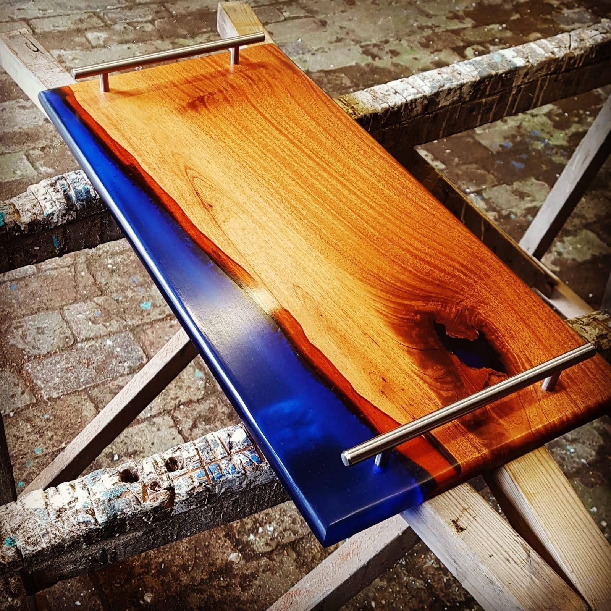

WOODWORKING
Practical skills and personal projects
My working life began in joinery, establishing an appreciation for materials, construction and careful workmanship. Those skills continue through furniture, restoration work and personal projects made for family and home.
A handmade charcuterie board combining natural timber with deep blue resin.